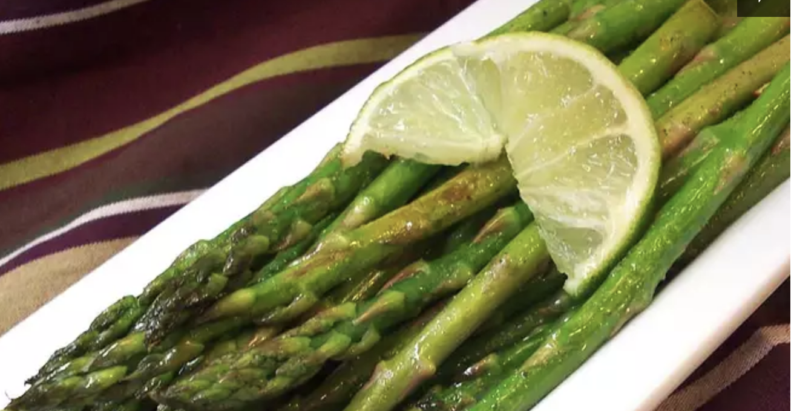

Garlic Asparagus with Lime

Description
This fresh tasting asparagus dish is always popular. Try it with Havarti or Swiss cheese melted on top.
Ingredients
- 1 teaspoon butter
- 1 tablespoon olive oil
- 1 clove garlic, minced
- 1 medium shallot, minced
- 1 bunch fresh asparagus spears, trimmed
- ¼ lime, juiced
- salt and pepper to taste
Steps
- Melt butter with olive oil in a large skillet over medium heat. Stir in garlic and shallots, and cook for 1 to 2 minutes. Stir in asparagus spears; cook until tender, about 5 minutes. Squeeze lime over hot asparagus, and season with salt and pepper. Transfer to serving plate, and garnish with lime wedges.